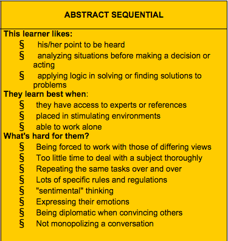

How am I Thinking
Sun Oct 26th, 2014
There are moments in our lives where probably everyone said “Wow, I never thought of it this way!”, or “I don’t understand how you can learn this way. Isn’t it boring/confusing/distracting/monotonous?” or something along this line. And we just moved on.
DBC added a new level of self-awareness by stopping us exactly there and encouraged us to look into what our learning and thinking styles are.
Gregorc’s Mind Styles
Gregorc’s Thinking model organizes how the mind works on two dimensions: First on “perceptual space,” concrete vs abstract, and “ordering,” sequential vs random. There are four combinations of the strongest perceptual and ordering ability in each individual:
- Concrete Sequential (CS) Thinkers tend to be based in reality. They process information in an ordered, sequential, linear way.
- Abstract Random (AR) Thinkers organize information through reflection, and thrive in unstructured, people-oriented environments.
- Abstract Sequential (AS) Thinkers love the world of theory and abstract thought.
- Concrete Random (CR) Thinkers are experimenters.
I took the test and scored the same in two combinations. Here is what I learned about myself:
Repeating the same tasks over and over (kill me now!)
Having no options (Oh really?)
Having too little time to deal with a subject thoroughly (time-boxing? but whyyyyyy???)
Looking at this picture and especially at “What’s hard for them?” shed a lot of light to why at times I am struggling doing something I love: learning and practicing coding. I realize that I need to work on some of the things that come hard to me, both on inter- and intrapersonal levels. And that to do that I need to develop a deeper self-awareness of my inner mechanics. On a more interpersonal level, I realized that understanding other styles: what they need, what they are looking for and what restricts them would allow even better partnerships and pairings to take place.
Taking this in with a “growth mindset”: I am glad I learned about my areas of development. I’m excited about improving every day!!